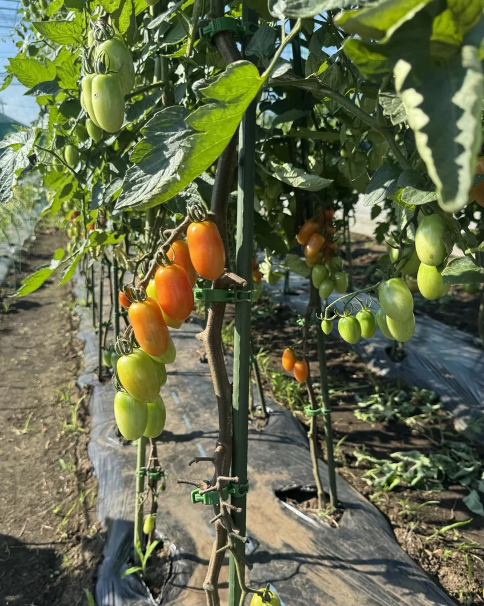

ベジタブルファースト
メニュー
Top
Project
Research
Activity
Goods
Farmers
SNS
03
活動記録
活動記録を表示するには JavaScript を有効にしてください。
NEXT
04
GOODS
グッズ・作品紹介
キーホルダーと缶バッジ。
→
OTHER PAGES
01
PROJECT
プロジェクト紹介
捨てられる野菜を、色の入口に変える。
→
02
RESEARCH
研究の記録
野菜をパウダーにして、絵の具になるまで。
→

05
FARMERS
農家さん紹介
野菜を届けてくれる八王子の農家さん。
→
06
SNS
SNS
最新の活動はXとInstagramで。
→
← トップへもどる